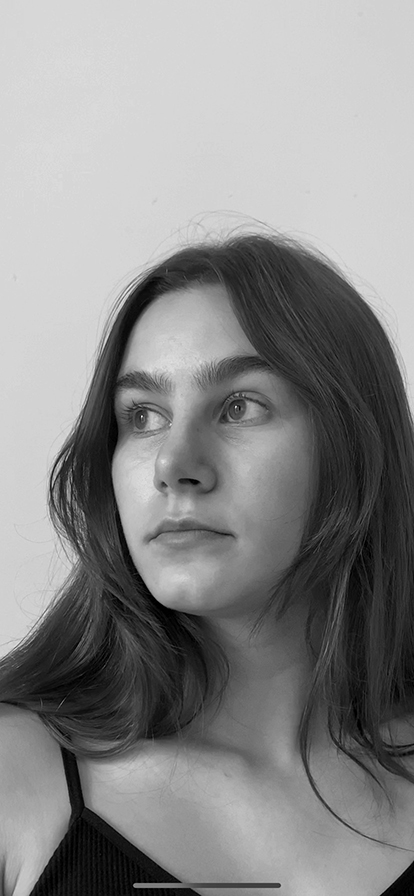

about
Pieternelle Maris studies Fine art at Maastricht Institute of Arts. Inpsired by (art) philosophy she
is focused on the perception of an image and searches for aesthetic rapture. She researches and
expresses her creative source through different media, especially in the disciplines film,
photography and text.
